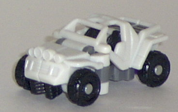
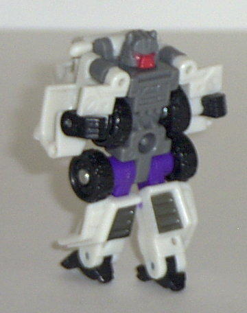
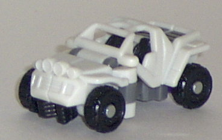
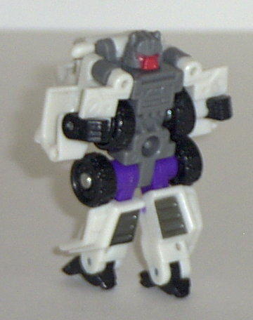
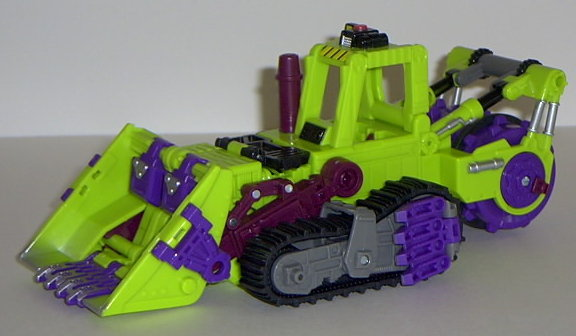
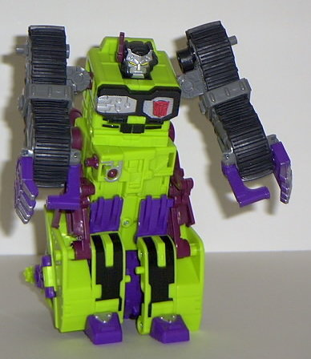
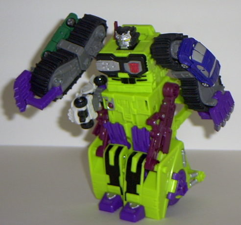

Rollbar
Rollbar
 
Allegiance : Minicon
Size : Mini-Con
Difficulty of Transformation : Very Easy
Color Scheme : Off-white, black, dark gray, and some dark silver-gray, purple, and dark flat red
Rating : 5.7
Rollbar


Allegiance
: Minicon
Size
: Mini-Con
Difficulty of Transformation
: Very
Easy
Color Scheme
: Off-white, black,
dark gray, and some dark silver-gray, purple, and dark flat red
Rating
: 5.7
Vehicle mode is a futuristic
jeep. And if this is the future, well... the future's ugly. This mode is
horribly misproportioned, and way too rectangular, especially from a side
view. The cage and seats are too small, while the front half of the car
is too large. The robot fists also clearly show under the front bumper.
I DO like the futuristic-styled headlights, but the lack of paint detailing
on them makes them blend in far too much with the rest of the car. In fact,
Rollbar is in desperate need of some more paint detailing- only the very
rear top part of the jeep mode is painted, and only the face in robot mode.
The Minicon port is on the bottom of this mode, slightly to the rear of
center.
Robot mode would be
nice, if it wasn't for the arms. Thar arms are really wonky, and are just
made up of the front parts of the jeep with tiny hands coming out of them.
The rest of the mode is has some nice mold detailing and proportions, however,
and I think it's really creative how they used the jeep seats as feet.
Rollbar has side-to-side shoulder articulation and front-to-back elbow,
hip, knee, and feet articulation. Not bad. His Minicon symbol... actually,
I can't find his Minicon symbol anywhere. Huh...
Rollbar is a mediocre
Minicon, nothing more. I can't figure out for the life of me why he's lauded
by many as one of the greatest Minicons ever, though...
 Scavenger
Scavenger



Allegiance
: Autobot
Size
: Max-Con
Difficulty of Transformation
: Medium
Color Scheme
: Lime green, black,
purple, dark maroon, silver, dark gray, and some yellow and light red
Powerlinx ports
: 3 (1 gimmicked)
Rating
: 6.8
Vehicle mode is a futuristic
bulldozer. This mode is really nice, if a bit "toyish" in its proportions.
The mold detailing is decent, if not spectacular, but there's plenty of
paint detailing to go around. I especially like the mini "siren light"
on the top of the control seat ceiling and the silver "worn metal" spray
app on the front of the shovel. The color scheme is also a nice fan nod-
it's almost the exact same as the old Constructicons, the construction
vehicle combiner team from the original Transformers series of yore. My
only real problem with this mode is that the robot hands are very clearly
visible on the sides of the (real rubber!) treads, which detracts from
the look a little. (Although not as much as you'd think, considering the
overall toyish appearance of this mode.) Now for the gimmicks: Put Rollbar
(or another similarly-shaped Minicon) in Scavenger's cockpit to trigger
a "starting-up engine" sound! Also, roll Scavenger along on a flat surface,
and his shovel moves up and down, his large "crusher" wheel on the back
moves, and a "moving" sound is emitted from the toy! Pretty neat, if I
do say so myself.
Robot mode is where
this toy falls apart, however. Oh, from the waist up, it's fine- a nice,
fearsome face (which makes me think he's more suited to be a Decepticon
than an Autobot...), huge grasping hands, a nice Autobot insignia on his
detailed chest, and the like. It's from the waist down that Scavenger looks
just plain stupid. He has no real legs, just the front of his shovel broken
in half and inverted over the wheel to try to convince you that, yes, these
small flat panels in front are his legs, never mind the huge wheel and
bulldozer rear behind them. This completely ruins any "coolness" Scavenger's
look may have given him in this mode, and on this large of a toy, is completely
unacceptable. Now, I understand that this is for a gimmick- roll Scavenger
along on the ground and his "legs" move up and down while a stomping sound
is emitted from the toy- but when a gimmick severely messes up a toy, than
it's not worth it. Not to mention that the inability to keep Scavenger's
legs very level dooms him to always leaning forward some, and he looks
like he's riding a tiny unicycle from any angle except the front. Oh yeah,
THAT looks cool... :P Also, Scavenger's vehicle mode control seat
sticks out quite a bit from his backside, also ruining the look. As for
Scavenger's other gimmicks in this mode, attach a Minicon to his...er...hip...
and pull back, and a missile fires along with an accompanying sound. (The
Minicon needs to have his port near the back of his vehicle mode, however,
otherwise the lever that holds Scavenger's foot to his body will get in
the way.) Also, if you move Scavenger's arms, a "clank!" sound will emit
from the toy. Although cool at first, this gets kinda annoying after a
while, since ANY significant movement of the arms will result in this sound
effect. Bleh. As for articulation, Scavenger can move his head, shoulders
(at two places), elbows, waist, thumbs, and fingers (as a whole). You can't
move his legs much at all outside of their set circular "stomping" path,
however...
Scavenger's vehicle
mode is wiggy, even though it's a bit toyish. But his robot mode is practically
crippled in its looks because of that darn stomping gimmick. My least favorite
Armada toy above the size of a Super-Con.
Review by Beastbot